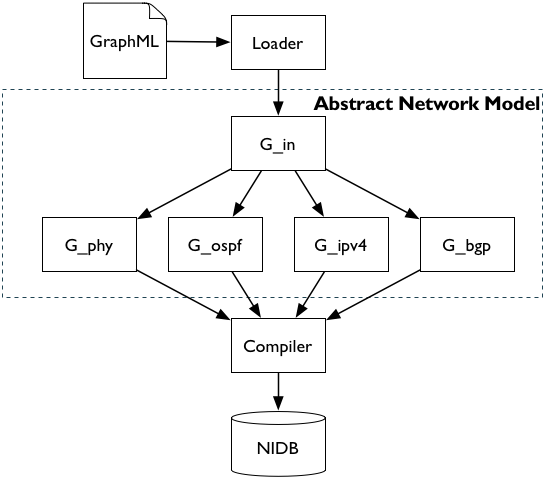
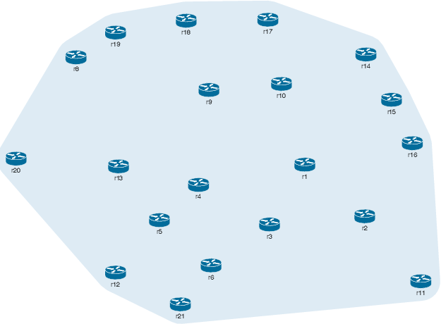
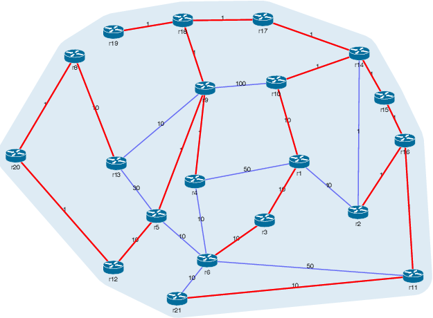

This tutorial has been written using the IPython Notebook system, which allows this tutorial to be run interactively.
The best way to do so is to check out the AutoNetkit project from GitHub:
git clone https://github.com/sk2/autonetkit
and run the notebook server from the examples directory:
$ cd autonetkit/examples
$ ipython notebook
This will bring up a webpage, allowing you to choose the tutorial notebook. You can then modify and execute the code using the run options under the "Cell" menu, the "Run" toolbar button, or by pressing Ctrl+Enter.
Please note this is a growing work in progress. It will be split into multiple tutorials in the future. To contribute, please fork the AutoNetkit GitHub project, modify the tutorial, and submit a pull request with your changes.
Install AutoNetkit by following the instructions here
If all goes successfully, you should be able to import autonetkit from the Python intepreter.
The below flowchart provides an overview of the design process in AutoNetkit.

The first step is to enable the visualisation server. At a command prompt, run
$ank_webserver
You should get the following message:
Visualisation server started
We can test that AutoNetkit can send to the webserver:
import autonetkit
autonetkit.update_http()
In this tutorial we use a graphml file created using the yEd graph editor, available at http://www.yworks.com/en/products_yed_about.html.
You can download yEd to modify the graphml file, and rerun the code to view the changes.
We can now import the graphml load module to import a graphml file, and the Abstract Network Model to store our overlay networks.
import autonetkit.load.graphml as graphml
import autonetkit.anm
anm = autonetkit.ANM()
#input_graph = graphml.load_graphml("small_internet.graphml")
input_graph = graphml.load_graphml("singleas.graphml")
g_in = anm.initialise_graph(input_graph)
autonetkit.update_http(anm)
Create the Physical Graph
g_phy = anm['phy']
g_phy.add_nodes_from(g_in, retain=['label', 'device_type', 'asn', 'platform', 'host', 'syntax'])
g_phy.add_edges_from(g_in.edges(type="physical"), retain='edge_id')
g_phy.update(g_phy, syntax="quagga")
autonetkit.update_http(anm)
The OSPF graph is constructed from routers in the physical graph, and edges in the physical graph, that are within an AS.
g_ospf = anm.add_overlay("ospf", g_in.routers())
g_ospf.add_edges_from((e for e in g_in.edges() if e.src.asn == e.dst.asn), retain='edge_id')
g_ospf.update(area=0) # set defaults
g_ospf.update_edges(area=0)
autonetkit.update_http(anm)

Now create the BGP overlays, also using the routers. This is a directed graph.
g_bgp = anm.add_overlay("bgp", g_in.routers(), directed = True)
autonetkit.update_http(anm)

g_bgp.add_edges_from((e for e in g_in.edges() if e.src.asn != e.dst.asn),
bidirectional = True, type = 'ebgp', retain='edge_id')
autonetkit.update_http(anm)

g_bgp.add_edges_from(((s, t) for s in g_bgp for t in g_bgp
if s.asn == t.asn and s is not t), type = 'ibgp')
autonetkit.update_http(anm)

import autonetkit.ank_messaging as ank_messaging
We can use the highlight function to highlight nodes and edges in the visualization.
asn = 30 # change me
nodes = [n for n in g_bgp if n.asn == asn]
edges = [e for e in g_bgp.edges() if e.dst.asn == asn and e.type == 'ebgp']
ank_messaging.highlight(nodes, edges)
We can use NetworkX Algorithms such as shortest path.
from autonetkit.ank_utils import unwrap_graph, unwrap_nodes
import networkx as nx
graph = unwrap_graph(g_phy)
nodes = [n for n in graph]
from random import choice
src = choice(nodes)
dst = choice(nodes)
#(src, dst) = ('as100r1', 'as1r1')
path = nx.shortest_path(graph, src, dst)
ebunch = zip(path[0:-1], path[1:])
edges = [g_phy.edge(s, t) for (s, t) in ebunch]
nodes = [src, dst]
ank_messaging.highlight(nodes, edges)

We can also use other graph algorithms, such as the Minimum Spanning Tree.
graph = unwrap_graph(g_ospf)
T = nx.minimum_spanning_tree(graph)
edges = [g_phy.edge(s, t) for (s, t) in T.edges()]
ank_messaging.highlight([], edges)

Now let's perform using the edge weight.
Since we are using an iBGP graph, it makes sense to use a larger network than the small_internet, which has at most 4 nodes per AS.
Another network to use would be singleas.graphml to do so, change the first cell above, and rerun the code.
We want to copy across the edge attribute ospf_cost from the input graph, and store it as the cost attribute on the ospf graph.
Since the underlying data structure is NetworkX, these attributes will be present when we unwrap the graph.
We can now add the 'weight' parameter to the MST function call. The rest of the code proceeds as before.
import autonetkit.ank as ank_utils
ank_utils.copy_edge_attr_from(g_in, g_ospf, "ospf_cost", dst_attr="cost", type=float)
autonetkit.update_http(anm)
graph = unwrap_graph(g_ospf)
T = nx.minimum_spanning_tree(graph, weight = 'cost')
edges = [g_phy.edge(s, t) for (s, t) in T.edges()]
ank_messaging.highlight([], edges)

asn = 20
nbunch = unwrap_nodes(g_bgp.nodes(asn=asn))
graph_bgp = unwrap_graph(g_bgp)
bgp_neighbors = nx.node_boundary(graph_bgp, nbunch)
ank_messaging.highlight(bgp_neighbors, [])
Using costs for SPF
nodes = [n for n in graph]
from random import choice
graph = unwrap_graph(g_ospf)
src = choice(nodes)
dst = choice(nodes)
#(src, dst) = ('r8', 'r1')
path = nx.shortest_path(graph, src, dst, weight = 'cost')
ebunch = zip(path[0:-1], path[1:])
edges = [g_phy.edge(s, t) for (s, t) in ebunch]
nodes = [src, dst]
ank_messaging.highlight(nodes, edges)

nodes = [n for n in graph]
src = choice(nodes)
dst = choice(nodes)
#(src, dst) = ('as100r1', 'as1r1')
flow = nx.max_flow(graph, src, dst, capacity = 'cost')
print flow
import autonetkit.plugins.ipv4 as ipv4
import autonetkit.ank as ank
g_ipv4 = anm.add_overlay("ipv4")
G_in = anm['input']
G_graphics = anm['graphics']
G_phy = anm['phy']
g_ipv4.add_nodes_from(G_in)
g_ipv4.add_edges_from(G_in.edges(type="physical"))
ank.aggregate_nodes(g_ipv4, g_ipv4.nodes("is_switch"), retain = "edge_id")
edges_to_split = [edge for edge in g_ipv4.edges() if edge.attr_both("is_l3device")]
split_created_nodes = list(ank.split(g_ipv4, edges_to_split, retain='edge_id'))
for node in split_created_nodes:
node['graphics'].x = ank.neigh_average(g_ipv4, node, "x", G_graphics)
node['graphics'].y = ank.neigh_average(g_ipv4, node, "y", G_graphics)
g_ipv4.update(split_created_nodes, collision_domain=True)
for node in g_ipv4.nodes("collision_domain"):
graphics_node = G_graphics.node(node)
node.host = G_phy.node(node.neighbors().next()).host # Set host to be same as one of the neighbors (arbitrary choice)
asn = ank.neigh_most_frequent(g_ipv4, node, "asn", G_phy) # arbitrary choice
node.asn = asn
graphics_node.asn = asn
graphics_node.x = ank.neigh_average(g_ipv4, node, "x", G_graphics)
graphics_node.device_type = "collision_domain"
cd_label = "cd_" + "_".join(sorted(ank.neigh_attr(g_ipv4, node, "label", G_phy)))
node.label = cd_label
graphics_node.label = cd_label
autonetkit.update_http(anm)

ipv4.allocate_ips(g_ipv4)
autonetkit.update_http(anm)

import autonetkit.plugins.ipv6 as ipv6
# uses the nodes and edges from ipv4
g_ipv6 = anm.add_overlay("ipv6")
g_ipv4 = anm['ipv4']
g_ipv6.add_nodes_from(
g_ipv4, retain="collision_domain") # retain if collision domain or not
g_ipv6.add_edges_from(g_ipv4.edges())
ipv6.allocate_ips(g_ipv6)
autonetkit.update_http(anm)

nidb = autonetkit.nidb.NIDB()
G_phy = anm['phy']
G_ip = anm['ipv4']
G_graphics = anm['graphics']
nidb.add_nodes_from(G_phy, retain=['label', 'host', 'platform', 'syntax', 'Network', 'update'])
cd_nodes = G_ip.nodes("collision_domain") # Only add created cds - otherwise overwrite host of switched
nidb.add_nodes_from(cd_nodes, retain=['label', 'host'], collision_domain = True)
edges_to_add = [edge for edge in G_ip.edges() if edge.src.collision_domain or edge.dst.collision_domain]
nidb.add_edges_from(edges_to_add, retain='edge_id')
nidb.copy_graphics(G_graphics)
autonetkit.update_http(anm, nidb)

import autonetkit.compiler
anm.add_overlay("isis")
autonetkit.update_http(anm, nidb)
host = "localhost"
nk_compiler = autonetkit.compiler.NetkitCompiler(nidb, anm, host)
nk_compiler.compile()
nidb.save()
We can see the NIDB for a router, this is what gets pushed into the templates:
router = nidb.routers().next() # choose a router
router.dump()
The Render module pushes the NIDB into the specified template(s), creating device configuration files.

import autonetkit.render
autonetkit.render.render(nidb)
import os
dst_folder = nidb.topology['localhost'].render_dst_folder
walked = os.walk(dst_folder)
for path, dirs, files in list(walked)[:10]: # first ten dirs
print path
for f in files[:10]: # first ten files
print "\t", f
We can see the config files for a router:
router = nidb.routers().next() # choose a router
zebra_dir = os.path.join(router.render.base_dst_folder, "etc", "zebra")
ospfd_conf = os.path.join(zebra_dir, "ospfd.conf")
with open(ospfd_conf, "r") as fh:
print fh.read()
bgpd_conf = os.path.join(zebra_dir, "bgpd.conf")
with open(bgpd_conf, "r") as fh:
print fh.read()
The deployment has a number of requirements:
A virtual machine created for the TAP Interface:
vstart taptunnelvm --con0=none --eth0=tap,172.16.0.1,172.16.0.2
(this will require sudo access on the Netkit host)
username = "sk2"
host = "192.168.255.129"
import autonetkit.deploy.netkit as nk_deploy
dst_folder = nidb.topology['localhost'].render_dst_folder
nk_deploy.deploy(host, username, dst_folder)
Measure requires a remote host to be setup, and rabbitmq running, (by default ank will look on localhost) http://www.rabbitmq.com/install-debian.html
or for OS X: http://superuser.com/questions/464311/open-port-5672-tcp-for-access-to-rabbitmq-on-mac
and
pip install pika
pip install https://github.com/knipknap/exscript/tarball/master
note this needs paramiko... which needs to compile. if you don't have python headers, eg in ubuntu:
sudo apt-get install python-dev
wget https://raw.github.com/sk2/autonetkit/master/autonetkit/measure_client.py
$ python measure_client.py --server 192.168.255.1
where --server specifies the rabbitmq server
can also use through ANK package: install ank through github, then install Exscript
Can then run the below measurement commands
$ ank_measure_client --server 192.168.129.1
import autonetkit.measure as measure
import random
remote_hosts = [node.tap.ip for node in nidb.routers() ]
dest_node = random.choice(list(nidb.routers()))
dest_ip = dest_node.interfaces[0].ipv4_address # choose random interface on this node
command = "traceroute -n -a -U -w 0.5 %s" % dest_ip
measure.send(nidb, command, remote_hosts)